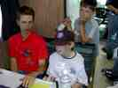
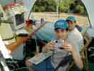
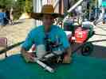
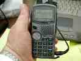
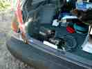
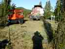
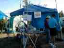
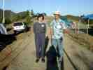
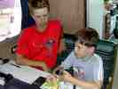

These are photos by Marc Ziegler W6ZZZ
|  (640x480 130K) (500x375 32K) |
Cutter (KG6LPN) a new ham (4th grader) operating 40m phone assisted by Bryan (KF6ZEO). (photo by Marc Ziegler W6ZZZ) |
|  (640x480 128K) (500x375 37K) |
Peter (K6PAI) operating the camera for our SSTV demonstration station. Visitors had their picture taken and then transmitted to the other side of our Field Day site using 20m SSTV. They would then walk over and pick up their color picture memento with a "WVARA Field Day 2002" caption. (photo by Marc Ziegler W6ZZZ) |
|  (640x480 132K) (500x375 41K) |
Bryan (KF6ZEO) with one of his two homebrew laser communication phone stations (high school science project from QEX). (photo by Marc Ziegler W6ZZZ) |
|  (640x480 124K) (500x375 30K) |
APRS demo by K1LPI - you can see our grid square and lat/long (photo by Marc Ziegler W6ZZZ) |
|  (640x480 138K) (500x375 39K) |
Portable digipeater demonstration supplied by N3EOP (photo by Marc Ziegler W6ZZZ) |
|  (640x480 126K) (500x375 51K) |
Emergency petrol power provided by the ever dependable "Svend Power & Light" organization (photo by Marc Ziegler W6ZZZ) |
|  (640x480 131K) (500x375 37K) |
Information Booth/Visitor Center operated by KF6LSK/KF6MCM and family (photo by Marc Ziegler W6ZZZ) |
|  (640x480 136K) (500x375 38K) |
MERC chairperson Susan Pierce wins us 100 bonus points for ARES served agency visit (photo by Marc Ziegler W6ZZZ) |
|  (640x480 128K) (500x375 35K) |
Bryan KF6ZEO assists an unknown youngster at the 40m phone station (photo by Marc Ziegler W6ZZZ) |
Back up to the WVARA Field Day 2002 pictures
Back up to the WVARA Field Day main page
Back up to the WVARA home page
{kind=link}
{kind=link}
{kind=link}
{kind=link}
{kind=link}
{kind=link}
{kind=link}
{kind=link}
{kind=link}
{kind=link}
{kind=link}
{kind=link}
{kind=link}
{kind=link}
{kind=link}
{kind=link}
{kind=link}
{kind=link}